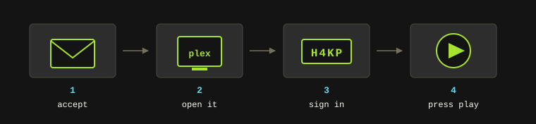
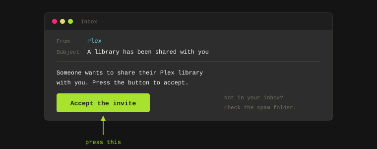
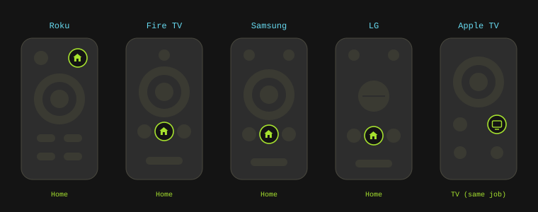
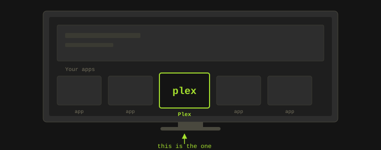
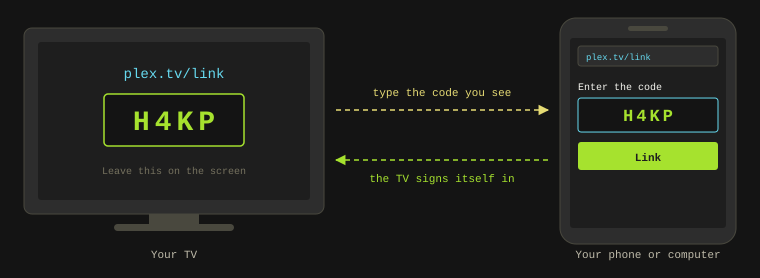
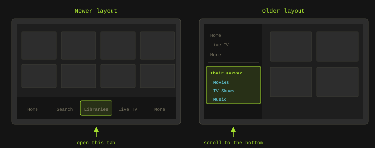

Watch on Your TV
Someone shared their Plex library with you. Here's how to accept it and get it on your TV, whatever brand you own.
This page is written for the person receiving the invite, not the person running the server. If a friend or a family member has shared their Plex library with you, this walks you through the whole thing, from the email to pressing play.
It assumes you've never set anything like this up before. Nothing here needs a computer, and nothing here needs you to understand what a server is. Set aside about ten minutes, and have your phone next to you for one step in the middle.

What You Need
- Your TV, with the Plex app on it.
- The invite email.
- Your phone or a computer, just for one sign-in step.
- The Wi-Fi your TV is already using. There's nothing new to set up there.
The only thing you'll ever type on the TV is a four-character code, and even that is optional if you'd rather use your phone.
Step 1: Accept the Invite

- Find the email. It comes from Plex and says someone wants to share their library with you. Check your spam or junk folder if it isn't in your inbox, because it lands there more often than it should.
- Press the button in the email that accepts the invitation.
- Sign in, or make an account. If you've never used Plex before, this is where you create one. You can use "Continue with Google" or "Continue with Apple" if you'd rather not invent another password.
- That's the invite accepted. You should be able to see their library right away in the web page that opens.
Note: If the email never turns up at all, you can accept without it. Go to
app.plex.tv in any web browser, sign in, then open Settings -> Manage Library
Access and look under "Library Invitations Received". Accept it with the checkmark.
Step 2: Open Plex on Your TV
Every TV puts its apps in a slightly different place. Find your brand below. If you're not sure what you've got, the name is usually printed on the front of the TV, and the remote is a giveaway too.

- Samsung
- LG
- Roku Sticks and Roku TVs (TCL, Hisense, Sharp, Philips, onn)
- Amazon Fire TV (Toshiba, Insignia, some Hisense)
- Google TV and Android TV (Sony, TCL, Hisense, Philips, Nvidia Shield)
- Vizio
- Hisense
- Apple TV
- Xbox and PlayStation
Whichever one you have, you're hunting for the same thing.

Samsung
- Press the Home button on the remote (the little house icon).
- Your apps run along the bottom of the screen. Look along that row for Plex and open it.
- If it isn't in the row, choose "Apps", pick the magnifying glass, and type
Plex.
LG
- Press the Home button (the house icon). If you have the pointer remote, aka the Magic Remote, it's the button in the middle.
- Your apps sit in the bar along the bottom. Scroll along it and open Plex.
- If it isn't in the bar, open "Apps" and search for
Plex.
Roku Sticks and Roku TVs
This covers the Roku Express and Streaming Stick, plus every TV with Roku built in. TCL, Hisense, Sharp, Philips, and onn all make them.
- Press Home (the house icon) on the purple Roku remote.
- Your channels are the grid of tiles on the right. Arrow across to Plex and press OK.
- New channels land at the bottom of that grid, so scroll down if you don't spot it near the top.
Amazon Fire TV
This covers the Fire TV Stick and Cube, plus TVs with Fire TV built in. Toshiba, Insignia, some Hisense and Pioneer sets, and Amazon's own TVs all use it.
- Press Home on the remote.
- Move up to the "Your Apps" row and arrow along it to Plex.
- You can also hold the microphone button and just say "Plex", which skips the hunting.
Google TV and Android TV
This is the biggest group. Most Sony, TCL, Hisense, Philips, and Sharp TVs sold in the last few years run one of these, and so do the Google TV Streamer, the Chromecast with Google TV, and the Nvidia Shield.
- Press Home.
- Go to the "Apps" tab along the top and open Plex.
- The microphone button works here too. Hold it and say "open Plex".
Vizio
Vizio TVs run SmartCast, which keeps its apps in a row rather than in a store you browse.
- Press the Home button. On older remotes it's the "V" button.
- Arrow along the row of apps to Plex and press OK.
Hisense
Hisense ships two different systems, so check which one you have. Some of their sets run Google TV, in which case use the Google TV and Android TV steps above. The rest run Hisense's own system, called VIDAA.
On VIDAA, press Home, then arrow along the app row at the bottom to Plex.
Apple TV
This means the little black box that plugs into your TV, not the Apple TV app.
- Press the TV button on the remote to get to the home screen.
- Move to the Plex icon and press the touchpad.
Note: Plenty of smart TVs have an app called "Apple TV" built into them. That's a different thing, and Plex won't be inside it.
Xbox and PlayStation
Both have a proper Plex app, and if a console is already plugged into the TV it's often the quickest route.
- Xbox One, Series S, and Series X - open "My games & apps", then "Apps", and pick Plex.
- PlayStation 4 and 5 - Plex sits in your library alongside your games. Open it from there.
Step 3: Sign In on the TV
This is the part people expect to be painful. It isn't, because you never type your password on the TV.

- Open the Plex app on the TV.
- Choose "Sign In".
- The TV shows a four-character code, something like
H4KP. Leave it on the screen. - On your phone or computer, open a web browser and go to
plex.tv/link. - Sign in with the Plex account from Step 1, if it asks you to.
- Type in the four characters from the TV and submit them.
- Within a few seconds the TV signs itself in. You don't have to press anything on it.
Note: Those codes expire after a few minutes. If the site says the code is wrong or expired, go back to the TV, come out of the sign-in screen and into it again, and use the fresh code it gives you.
Step 4: Find Their Library
This is the step that trips most people up. When Plex opens, the home screen is mostly Plex's own movies and channels, which isn't what you're here for. Your friend's library lives somewhere else in the app.
Plex has been redesigning its TV apps through 2026, so you'll see one of two layouts.
The newer layout puts a row of tabs along the bottom or the side, one of which is "Libraries". Open that, and their libraries are listed under the name of their server, something like "Doug's Media Server". Movies, TV Shows, and Music are usually separate entries under it.
The older layout has a menu that slides out from the side. Press left on the remote to open it, or look for the "hamburger" button, which is three stacked lines. Scroll past your own things to the bottom, and their server name is sitting there with its libraries underneath.

Either way, once you've found it: open a library, pick something, and press play. That's the whole job done.
Tip: Most versions of the app let you pin or favorite a library so it turns up on the home screen next time. It's worth doing on the first evening, because it saves you the hunt every time after that.
If anything on the TV doesn't match what you're reading here, tell whoever invited you exactly what the screen says, word for word. They can see far more from their end than you can from yours.